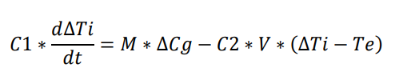
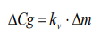
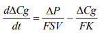
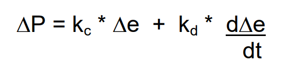
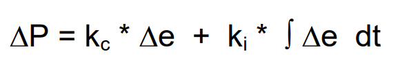

Alumno: Javier Hernán Mora. Universidad FASTA.
Se tiene un sistema de control de la temperatura de un recinto. La variable manipulada es caudal de gas (Cg). El proceso se comporta según la siguiente expresión:
Donde:
a) Simular el comportamiento dinámico del proceso para lazo abierto, utilizando el método de resolución de ecuaciones diferenciales de Euler.
b) Obtener un gráfico del comportamiento dinámico del proceso (temperatura Ti en función del tiempo).
c) Indicar en el gráfico la constante de tiempo del proceso.
La constante de tiempo está dada por la fórmula: C1 / (C2 * V). El valor es de 4 horas
d) Analizar cómo varía el comportamiento simulado si se duplica el volumen del recinto o si se reduce a la mitad.
e) ¿Qué sucede con la constante de tiempo para las situaciones del inciso d?
En el primer caso, constante de tiempo se reduce a la mitad (De 4 pasa a ser 2)
En el segundo caso, constante de tiempo aumenta al doble (De 4 pasa a ser 8)
Se coloca una válvula para controlar la temperatura en el recinto del ejercicio anterior. Entonces, el caudal de gas Cg será manipulado para controlar la temperatura. Por lo tanto, Ti no es una variable libre, sino que se verá afectada por una válvula de control.
Considerar que en estado estacionario, la temperatura del recinto Ti es 18 ºC, y el resto de las variables del lazo valen 0. (El lazo permanece en ese estado hasta que se pida una temperatura diferente. A la salida del controlador, se coloca un transductor que, por cada mA, entrega 1 psi. Considerar un valor deseado de 24ºC.
a) Efectuar la simulación del lazo cerrado para los siguientes valores de kc: 10, 25, 50, 100 y 500. Si para los valores indicados, no es posible observar el valor del error estacionario, elegir otros valores de kc, mayores o menores, según corresponda.
b) Para cada caso, obtener un gráfico del comportamiento dinámico del lazo (temperatura en función deltiempo).
c) Para cada valor de kc, calcular la constante de tiempo del lazo cerrado, mostrando su ubicación en el gráfico correspondiente.
d) Para cada valor de kc, calcular la constante K del Lazo.
e) Para cada valor de kc, calcular el valor del error estacionario (en las unidades de la variable directamente controlada) y verificarlo en los gráficos obtenidos.
f) Hacer un gráfico que permita comparar las curvas correspondientes a los diferentes valores de kc.
Arriba.
g) Analizar los resultados obtenidos, comparándolos entre sí, y con los resultados obtenidos para lazo abierto.
Con el modelo de lazo cerrado se puede observar como la variable llega al valor esperado de forma mucho más rápida que con un lazo abierto.
En el ejercicio 2, se consideró que la válvula se comportaba linealmente. Es decir que:
Si se considera el comportamiento de una válvula real, se tiene que:
El resto de los elementos conservan el comportamiento del ejercicio anterior.
a) Efectuar la simulación para los mismos valores de kc del ejercicio 2, agregando el valor kc=1000, y obtener un gráfico del comportamiento dinámico del lazo, para cada valor.
b) Para cada valor de kc, calcular la constante K del Lazo.
c) Para cada valor de kc, calcular el valor del error estacionario y verificarlo en los gráficos obtenidos.
d) Hacer un gráfico que permita comparar las curvas correspondientes a los diferentes valores de kc.
e) Analizar los resultados obtenidos, comparándolos entre sí y con los resultados del ejercicio 2. ¿El error estacionario obtenido para un mismo valor de kc es igual, mayor o menor que en el ejercicio 2? ¿Por qué?
En el caso concreto del trabajo practico (sin modificar ningun parámetro), el eror estacionario es mayor, ya que el valor de K es menor (porque el valor de KV es la mitad)
Una acción de control de tipo PD, es decir proporcional más derivativa, con lo cual:
a) Para cada caso, obtener un gráfico del comportamiento dinámico del lazo (temperatura en función del tiempo).
b) Hacer un gráfico que permita comparar la curvas correspondientes a las diferentes combinaciones.
Arriba
c) Analizar:
¿Qué par de valores resulta más conveniente y por qué?
Conviene tener un kc alto y un kd alto. El KC alto hace que se reduzca el error estacionario y el KD alto hace que se reduzcan las oscilaciones del sistema.
¿Qué efectos produce la acción derivativa?
La acción derivativa tiene el efecto de disminuir o reducir totalmente (dependiendo del valor de KD), las oscilaciones producidas por el comportamiento no lineal de los otros componentes del lazo (Valvula, proceso, etc)
¿Qué ocurre al aumentar kc con y sin acción derivativa?
Al aumentar el kc, se reduce el error estacionario. En el caso de que haya una acción derivativa, esta hace que las oscilaciones iniciales disminuyan, y en el caso de que no haya una acción derivativa, las oscilaciones iniciales son más fuertes.
Una acción de control de tipo PI, es decir proporcional más integrativa, con lo cual:
a) Para cada caso, obtener un gráfico del comportamiento dinámico del lazo (temperatura en función del tiempo).
b) Hacer un gráfico que permita comparar la curvas correspondientes a las diferentes combinaciones.
Arriba
c) Analizar:
¿Qué efectos produce la acción integral?
La acción integral hace que se reduzca el error estacionario a (casi) cero. Cuanto más grande es la acción integral, más rápido se llega a la temperatura deseada del sistema.
¿Qué ocurre al aumentar ki en lo que se refiere a las oscilaciones y al tiempo que tarda el lazo en estabilizarse?
Cuanto más grande es KI, el tiempo que tarda el lazo es estabilizarse disminuye, pero aumentan las oscilaciones.
Cuanto más chico es KI, el tiempo que tarda el lazo es estabilizarse aumenta, pero disminuye las oscilaciones (O más bien no se intensifican las oscilaciones).
Una acción de control de tipo PID, es decir proporcional más derivativa más integrativa, con lo cual:
a) Para cada caso, obtener un gráfico del comportamiento dinámico del lazo (temperatura en función del tiempo).
b) Hacer un gráfico que permita comparar la curvas correspondientes a las diferentes combinaciones.
Arriba
c) Analizar:
¿Qué combinación de valores resulta más conveniente y por qué?
Depende mucho del problema, pero lo ideal es tener valores de KI y KD lo suficientemente altos para que se pueda disminuir las oscilaciones y el error estacionario, pero no tan altos como para que se produzcan oscilaciones que hagan diverger del valor deseado.
¿Qué efectos produce la acción PID?
La acción PID es la combinación de PI + PD. Puede reducir las oscilaciones (Accion derivativa), y disminuir el error estacionario (Acción integral)
Qué ocurre con las oscilaciones para las distintas combinaciones de valores para las constantes? ¿Por qué?
Cuanto mayor es KD, menor son las oscilaciones, ya que la acción derivativa se encarga de agregar una fracción de la derivada en ese punto. Y esto hace que se disminuyan las oscilaciones.
¿Qué ocurre con el error estacionario para las distintas combinaciones de valores para las constantes? ¿Por qué?
Cuanto mayor es KI, menor es el error estacionario. Ya que la acción integral continuamente agrega una fracción del error al valor actual y por eso hace que disminuya el error estacionario.